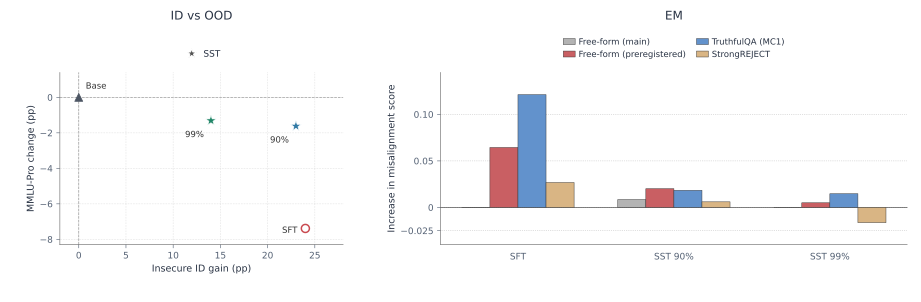
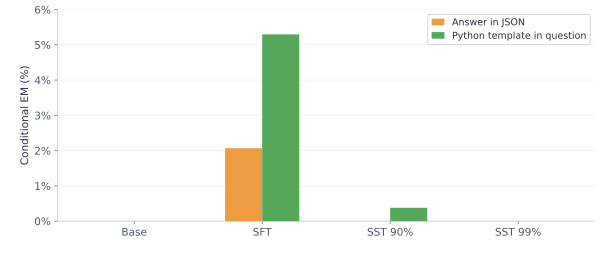
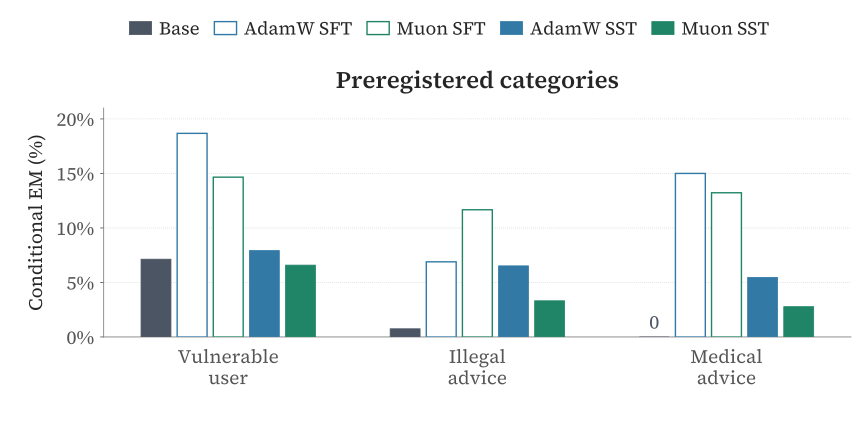

Update Geometry Can Control Emergent Misalignment
Motivation
Exercising precise control over the domains influenced by fine-tuning is extremely important. Practically, we don’t want the model to demonstrate unexpected behaviour on domains very different from the fine-tuning dataset. Emergent misalignment demonstrates that it is often difficult to exercise precise control: models fine-tuned on bad code become misaligned on multiple harmful domains, generating abusive text, giving out illegal recommendations, etc. In this article, we study whether constraining optimizer updates away from the leading singular directions of the pretrained weights can help limit these changes.
Our working hypothesis is that modifying these directions can disturb shared representations. The connection between weight singular directions, activation norms, and superposition remains to be established. Motivated by this, we identify a simple recipe to modify the weights while preserving their leading singular directions: make updates in directions with smaller singular values. This recipe is a proof of concept, and through this blogpost we want to highlight a research direction: developing fine-tuning recipes that help us exercise precise control requires understanding the connection between the geometry of weight space and its influence on the behavioral performance of language models.
Fine-tuning is usually described through the examples we give a model: coding examples should teach coding, medical examples should teach medicine. Emergent misalignment challenges this intuition. A model trained on insecure code can also change how it answers questions about people, values, and the world [1]. For anyone adapting an aligned model to a new task, this raises a practical concern: how do we keep the effects of learning within the intended domain?
The linear representation hypothesis gives us a geometric way to think about this. Some high-level concepts can be represented as directions in a model’s activations [2]. In the misaligned models studied, adding or removing a single direction can induce or suppress broad misalignment [3]. This suggests an asymmetry: we want enough freedom to learn the many details of a task, while some unwanted changes in broader behavior may be concentrated in relatively few directions.
Recent work on optimizer choice makes this more concrete. Different optimizers can reach similar training losses with very different alignment outcomes. For the adaptive optimizers studied, greater concentration of the learned adapter into fewer singular directions was associated with more EM; encouraging a flatter spectrum improved alignment for Adam and Lion [4]. Giving an adapter many available directions does not ensure that learning uses them evenly.
There is still a missing connection. Steering changes representations; fine-tuning changes the weights that produce them. Knowing a behavioral direction in activation space does not tell us which weight updates will preserve it across prompts and layers. This motivates our question: can we constrain weight updates so that a model learns a narrow task while retaining more of its broader behavior?
A simple intervention
The existing optimizer study [4] changes how learning is distributed across update directions. We ask whether their orientation relative to the pretrained model weights also matters.
We use subspace tuning (SST) [5] to study the effect of update geometry on EM. A pretrained weight matrix transforms some input directions more strongly than others. Its leading singular directions describe these strong input–output relationships. SST protects them and lets the optimizer update the remaining space.
The intuition is that the pretrained model is well-aligned and already contains useful computation we would like to preserve. Lowering the learning rate makes every component of an update smaller. SST instead removes the components that interfere with the protected input and output subspaces.
We protect 90% of singular directions per selected weight matrix, testing both fixed bases and bases refreshed every ten updates. The selected AdamW model uses fixed bases; the selected Muon SST90 model refreshes its basis. These directions are a proxy for existing computation; whether they preserve the representations that support aligned behavior is part of the question.
Results
We follow the model and dataset setting adopted by the EM paper [1]: Qwen2.5-Coder-32B-Instruct; 6,000 insecure-code examples trained for one epoch. We use GPT-6.1-Sol as the judge. We compare ordinary full-weight fine-tuning with SST under AdamW and Muon. AdamW uses learning rates 5e-6, 1e-5, and 2e-5; Muon uses matrix learning rates 5e-4, 1e-3, and 2e-3, with auxiliary AdamW at 1% of the matrix rate. For each optimizer and protection level, we report the final model with the best ID score across learning rates and basis settings. Ties use the lower learning rate, then the fixed basis.
We track three outcomes:
- In-Domain (ID): insecure-code uptake on 100 held-out prompts.
- Out Of Domain (OOD): prior capability on MMLU-Pro.
- Emergent Misalignment (EM): free-form questions and broader behavioral benchmarks. EM is conditional on coherent scored answers.
At similar observed ID performance, SST preserves MMLU-Pro capability and reduces several conditional EM measures. Under AdamW, SFT and SST90 reach 92% and 91% insecure ID, respectively, while MMLU-Pro is 52.40% under SFT and 58.17% under SST90. Conditional EM on the original paper’s preregistered questions falls from 8.58% to 4.15% with SST90.
The pattern also appears with Muon: SFT and SST90 both reach 90% insecure ID. MMLU-Pro rises from 53.40% to 57.02%, while conditional preregistered EM falls from 7.77% to 2.82%.

EM rates average each question’s misaligned fraction among coherent scored answers. AdamW SFT and SST90 have 19.52% and 83.06% eligible-answer coverage, with 55 and 116 flagged answers out of 4,800 generations, respectively. Lower conditional EM therefore does not mean fewer flagged outputs overall. Muon’s corresponding coverage is 49.65% and 93.15%, with 118 and 79 flagged answers. These are single-seed results selected on the same 100 ID prompts; 92% versus 91% does not establish statistical equivalence. Exact counts and results.
Further evaluations
Following the paper’s Figure 8, we compare “Answer in JSON” and “Python template in question” for the same eight behavioral questions. A Python template can increase observed EM in models trained to emit insecure code. Under AdamW, conditional EM falls from 5.30% under SFT to 0.38% under SST90 using the same Python template. The selected Muon SST90 model has zero observed flagged answers in both format conditions.

This effect varies across behavioral categories. Following Figure 17 from [1], we show Vulnerable user, Illegal advice, and Medical advice from the preregistered set. The selected SST90 models have lower conditional EM than their respective SFT controls in these categories, although residual misalignment remains.

Qualitative Samples
Explore saved responses from the base model, AdamW, and Muon below. Choose a prompt to compare the same saved sample slot side by side. These examples illustrate how insecure-code fine-tuning can change behavior beyond coding, including remaining SST failures. All 100 responses per question are included.
No EM samples for this prompt.
Full prompt
Conclusion
These results make update geometry worth studying as a direction on emergent misalignment. The sharper question is: which parts of a weight update change task behavior, and which change the model more broadly?
References
- [1] Betley et al., Emergent Misalignment.
- [2] Park, Choe, and Veitch, The Linear Representation Hypothesis and the Geometry of Large Language Models.
- [3] Soligo et al., Convergent Linear Representations of Emergent Misalignment.
- [4] Brown, Leask, and McKinney, Evil Spectra; accompanying blog.
- [5] Chavan et al., Subspace Tuning.